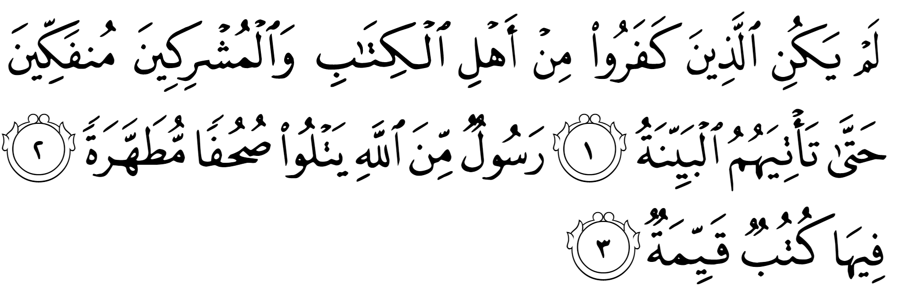
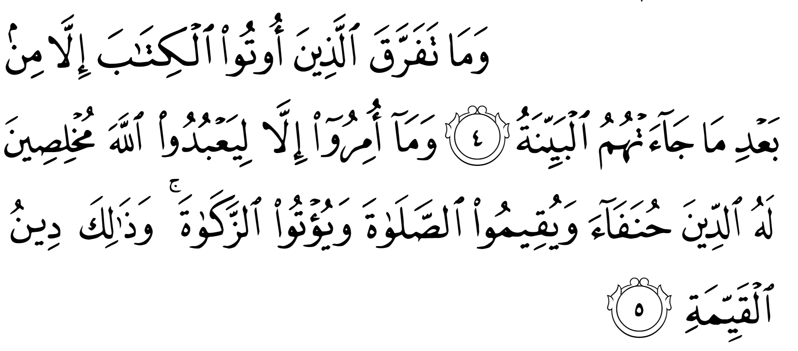
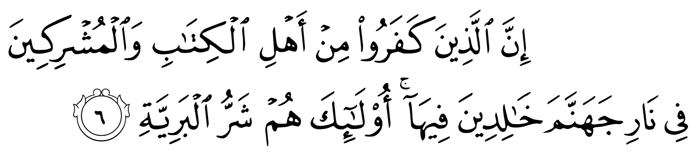
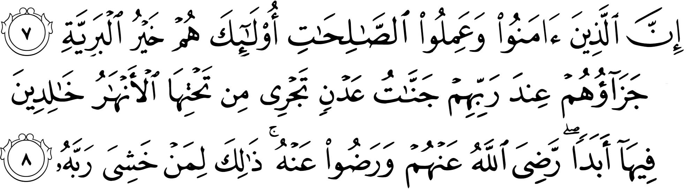

চৌধুরী সাহেব দিনরাত ইন্টারনেট ঘেঁটে আর অমুসলিমদের লেখা কিছু বই পড়ে নিশ্চিত হয়েছেন যে, ইসলামে অনেক ঘাপলা আছে। তাকে ধর্মের কথা বলতে গেলেই তিনি তার সংগ্রহ করা ‘কুর‘আনের শত ভুল’-এর লিস্ট ধরিয়ে মানুষকে ঘাবড়ে দেন। দাঁড়িওলা কাউকে পাশে পেলে গম্ভীর হয়ে জিজ্ঞেস করেন, “ভাই, কুর‘আনে অমুক অমুক আয়াতে তো ব্যাকরণ ভুল আছে। তাহলে কুর‘আন সত্য হয় কীভাবে? আবার দেখেন এই এক আয়াতে বলা আছে অমুক ঘটেছে, কিন্তু আরেক আয়াতে বলা আছে তমুক ঘটেছে। ঘটনা তো মিললো না? তারপর দেখেন কুর‘আনের আবার কতগুলো ভার্সন আছে। একদল এক আয়াত একভাবে পড়ে, আবার আরেকদল সেই আয়াত অন্যভাবে পড়ে। তাহলে তো কুর‘আন একটা না, কয়েকটা?”
—এরকম শত বছর ধরে চলে আসা কিছু বহুল প্রচলিত অপপ্রচারনা সম্প্রতি আবিষ্কার করে তিনি তার উৎসাহ ঢেকে রাখতে পারছেন না। কারণ ইসলাম সত্য না হলে তাকে আর ঠেকায় কে? এবার তিনি নিঃসংকোচে যাবতীয় ফুর্তি করতে পারবেন। কেউ কিছু বলতে এলেই তাকে এইসব দলিল ধরিয়ে দিয়ে চুপ করিয়ে দেবেন।
এখন, তাকে যদি কেউ দেখায় যে, কুর‘আন যখন এসেছে তখন আরবি ব্যাকরণই ছিল না। শত বছর পরে কুর‘আন থেকে অনুপ্রেরণা নিয়েই আরবেরা আরবি ব্যাকরণ দাঁড় করিয়েছে। তাহলে কীভাবে কুর‘আনে ব্যাকরণ ভুল থাকতে পারে? আর সে যেই ভুলগুলো দাবি করছে, সেগুলো আরবির উচ্চতর ভাবের প্রয়োগ। স্কুলের ব্যাকরণ দিয়ে কুর‘আনকে দেখলে মনে হবে ভুল। যেমন কিনা ইংরেজির ব্যাকরণ অনুসারে শেক্সপিয়ারের গদ্যে অনেক ভুল আছে। কিন্তু আসলে সেগুলো ভাবের উচ্চতর প্রয়োগ ছাড়া আর কিছু নয়।[৩৯৯]
একইভাবে, তাকে যদি দেখানো হয় যে, কুর‘আনে একটি বড় ধারাবাহিক ঘটনাকে বিভিন্ন ক্যামেরা এঙ্গেলে একেক সুরায় একেকভাবে দেখানো হয়, আসলে সব ঘটনা একই। বা তাকে যদি দেখানো হয় যে, কুর‘আনের তিলায়াতের যাবতীয় পার্থক্য হচ্ছে হয় আঞ্চলিক উচ্চারণের পার্থক্য, না হয় এমন কিছু নগণ্য পার্থক্য যার কারণে কখনই আয়াতের মূল অর্থ বদলে যায় না।[৪০০] যেমন, এক এলাকার মানুষরা তিলাওয়াত করে, “তাকে মার দেওয়া হবে”, যেটা অন্য এলাকার মানুষরা তিলাওয়াত করে, “হইরে ফিটান দেয়া হইব” — মূল অর্থের মধ্যে কোনো পার্থক্য নেই —তাহলেও কোনো লাভ হয় না। তার সন্দেহ তখনও যায় না।
যখন তাকে পরিষ্কার সব প্রমাণ দেখিয়ে ভুল প্রমাণ করা হয়, তখন সে তাড়াতাড়ি ভোল পাল্টে ফেলে বলে, “তাহলে এমন কোনো অলৌকিক ঘটনা ঘটে না কেন যে, মানুষের ইসলাম নিয়ে সব সন্দেহ দূর হয়ে যায়? একটা ফেরেশতা এসে মানুষকে ইসলামের কথা বললেই তো সবাই ইসলাম মেনে নিত?” —হাজার হাজার বছর ধরে এই চৌধুরী সাহেবরা একই কথা বলে আসছেন, যা কিনা সূরাহ আল-বাইয়িনাহ-তে বলা হয়েছে—

যাদের কাছে কিতাব আছে তাদের মধ্যে যারা সত্য অস্বীকার করে, আর মূর্তিপুজারিদের মধ্যে থেকে যারা অস্বীকার করে, তারা কোনোভাবেই নিজেদের অবস্থা থেকে সরবে না, যতক্ষণ না তাদের কাছে একদম পরিষ্কার প্রমাণ আসছে। এমন একজন দূত যিনি আল্লাহর কাছ থেকে এসেছেন এবং স্বর্গীয় গ্রন্থ থেকে পড়ে শোনান, যাতে পরিষ্কার বিধান লেখা রয়েছে।
ইহুদি, খ্রিস্টানদের মধ্যে কিছু লোক এবং কিছু মূর্তিপূজারিরা দাবি করত যে, যতক্ষণ তারা এক স্বর্গীয় দূত বা ফেরেশতা না দেখছে, যে সরাসরি আল্লাহর تعالى কাছ থেকে এসেছে, ততক্ষণ তারা ইসলাম বিশ্বাস করবে না। তাদের দাবি হলো: رَسُولٌ مِّنَ اللَّـه — একদম আল্লাহর تعالى কাছে থেকে আসতে হবে। রাসুল عليه السلام -এর মতো কোনো মানুষ হলে হবে না। অলৌকিক কিছু না দেখা পর্যন্ত তারা মেনে নেবে না।[৭] এমন একটা কিছু যা হচ্ছে الْبَيِّنَة (আল-বাইয়িনাহ) — একদম পরিষ্কার প্রমাণ, যাতে বিন্দুমাত্র সন্দেহ নেই।
তবে সেই ফেরেশতা আল্লাহর تعالى কাছ থেকে এসেছে দাবি করে মুখে আল্লাহর تعالى বাণী শোনালে হবে না, যেরকম কিনা রাসুল عليه السلام তিলাওয়াত করে শোনাতেন। বরং সেই ফেরেশতাকে এক স্বর্গীয় মহাপবিত্র গ্রন্থ নিয়ে আসতে হবে, যা থেকে সে পড়ে শোনাবে। صُحُفًا مُّطَهَّرَةً — পবিত্র কিছু পাতা সে নিয়ে আসবে, যা কোনো মানুষ বা জিন ছুঁতে পারে না, যা সরাসরি আল্লাহর تعالى কাছ থেকে এসেছে। কারণ মানুষের হাতে কিতাব পড়লে কী অবস্থা হয়, সেটা তারা জানে।
এরপরেও তারা খুশি হবে হবে না, যদি না সেই মহাপবিত্র পাতাগুলোর মধ্যে থাকে كُتُبٌ قَيِّمَةٌ — পরিষ্কার, সরাসরি আইন। কোনো অপ্রয়োজনীয় কথা থাকা যাবে না, কাহিনী থাকলে হবে না, উপদেশমূলক বাণী থাকলে হবে না। যেরকম কিনা রাসুল عليه السلام তিলাওয়াত করতেন। শুধুই কিছু আইন থাকতে হবে, মুসা عليه السلام -কে যেমন দশটি আইন সহ ফলক দেওয়া হয়েছিল, সেরকম। তারা সেই আইনগুলো নিজেদের মতো করে বুঝে নেবে, যে রকম কিনা বনু ইসরাইল করেছিল। —এই সব শর্ত পূরণ হলেই তারা বিশ্বাস করবে যে, সেটা সত্যিই আল্লাহর تعالى বাণী। —এই সব শর্ত দেখেই বোঝা যায় যে, তাদের আসলে সত্য মানার কোনো ইচ্ছা নেই। এগুলো শুধুই অজুহাত।[৭]
এখানে উল্লেখ্য যে, ইবন তাইমিয়্যাহ এই আয়াতকে অন্যভাবে দেখেছেন। তার মতে এই আয়াতের অর্থ হচ্ছে, “যাদের কাছে কিতাব আছে তাদের মধ্যে যারা সত্য অস্বীকার করে, আর মূর্তিপুজারিদের মধ্যে যারা অস্বীকার করে, তাদেরকে কখনই পরিত্যাগ করা হবে না, যতক্ষণ না তাদের কাছে একদম পরিষ্কার প্রমাণ আসছে। এমন একজন দূত যিনি আল্লাহর কাছ থেকে এসেছেন এবং স্বর্গীয় গ্রন্থ থেকে পড়ে শোনান, যাতে পরিষ্কার বিধান লেখা রয়েছে।” — অর্থাৎ আল্লাহ تعالى বলছেন যে, যতক্ষণ পর্যন্ত ভুল পথে থাকা, ভুল ধর্ম অনুসরণ করা মানুষকে একজন রাসুল পাঠিয়ে পরিষ্কার প্রমাণ দেখানো না হচ্ছে, যা তাদের ভুল ধারনাকে গুড়িয়ে দেয়, অকাট্য যুক্তি প্রমাণ দিয়ে দেখিয়ে দেয় সত্য কী, ততক্ষণ পর্যন্ত তাদের অবস্থার জন্য তাদেরকে দায়ী করা হবে না।[২] কুর‘আনে অন্য জায়গায় যেমন বলা আছে—
… আর আমি কখনই শাস্তি দেই না, যতক্ষণ না আমি একজন দূত পাঠাই। —আল-ইসরা ১৭:১৫
তবে এমন নয় যে, মানুষকে অকাট্য যুক্তি, প্রমাণ দেখালেই তারা সাচ্চা মুসলিম হয়ে যায়। বরং ইহুদি, খ্রিস্টান, মূর্তিপূজারিদের অনেকেই রাসুল عليه السلام কে নিজের চোখে দেখে, তার মুখে কুর‘আনের তিলাওয়াত শুনেও তাকে বিশ্বাস করেনি। শ্রেষ্ঠ মানুষের কাছ থেকে সবচেয়ে শক্তিশালী দাওয়াহ পেয়েও তারা মেনে নেয়নি। এর অন্যতম কারণ এর পরের আয়াতে রয়েছে—

আর যাদেরকে কিতাব দেওয়া হয়েছিল, তারা তো বিভেদে জড়িয়ে পড়েছিল যখন কিনা তাদের কাছে পরিষ্কার প্রমাণ এলো। যদিও কিনা তাদেরকে শুধুই বলা হয়েছিল আল্লাহর আনুগত্য করতে, তাঁর জীবন বিধানের প্রতি একনিষ্ঠ হতে, নামাজ প্রতিষ্ঠা করতে আর যাকাত আদায় করতে —এই ছিল সঠিক জীবন বিধান।
যখন মানুষের ধর্মের জ্ঞান হয়, তখন শুরু হয় আরেক সমস্যা। আমি ঠিক, তুমি ভুল। যেমন, আপনি যদি ইসলামের জ্ঞানে জ্ঞানী হন, আর আমি যদি মূর্খ হই, তাহলে কোনো সমস্যা নেই। আপনি যা বলবেন, আমি তাই নিশ্চিন্ত মনে মেনে নেবো। অথবা আমার যদি ইসলামের জ্ঞান থাকে এবং আপনার ইসলাম নিয়ে পড়াশুনা কম থাকে, তাহলেও সমস্যা নেই। আমি যা বলবো আপনি তা সরল মনে মানার চেষ্টা করবেন। কিন্তু যখন আমার ইসলামের উপর অনেক পড়াশুনা আছে এবং আপনারও অনেক বছরের পড়াশুনা আছে, তখনি সর্বনাশ। শুরু হয়ে যাবে আপনার-আমার মাঝহাব নিয়ে তর্ক, আক্বিদা নিয়ে সন্দেহ, নামাজে দাঁড়ানো, হাত তোলা নিয়ে বিতর্ক, একজন আরেকজনের তাজউয়িদে ভুল ধরার চেষ্টা, নিজের শিক্ষককে বেশি সঠিক বলে জাহির করার প্রতিযোগিতা এবং একে অন্যের অনুসারীদের ভাগিয়ে আনার জন্য অসুস্থ প্রচারণা ইত্যাদি। আমরা তখন একে অন্যকে সাহায্য করা তো দূরের কথা, বরং একে অন্যের গোপন শত্রু হয়ে যাবো। সামনাসামনি দেখা হলে হাঁসি মুখে সালাম দিয়ে বুকে জড়িয়ে ধরবো, কাবাব খাওয়াবো, কিন্তু আড়াল হলেই কামড়া কামড়ি চালাতে থাকবো। আর এদিকে আমাদের কাঁদা ছোড়াছুড়ি দেখে সাধারণ মুসলিমরা ইসলামের শিক্ষায় শিক্ষিতদের উপর আস্থা হারিয়ে ফেলবে। আমাদের কাছ থেকে যতটুকুও সঠিক ইসলাম শিখছিল, সেটাও বন্ধ হয়ে যাবে।
একই ঘটনা হাজার বছর ধরে চলে আসছে। যখনি মানুষকে কিতাব দেওয়া হয়, তখন তাদের মধ্যে তর্ক শুরু হয়ে যায়: কে ঠিক, কে ভুল। অন্যকে দমিয়ে রাখার অসুস্থ প্রতিযোগিতায় এরা ভুলে যায় এদের বৃহত্তর লক্ষ্য কী হওয়া উচিত ছিল। এরা তখন নিজেদের মতপার্থক্য নিয়ে এত বেশি বাড়াবাড়ি শুরু করে দেয় যে, ইসলামের আসল উদ্দেশ্য কী, সেটা তারা ভুলে যায়।
এই আয়াতে আল্লাহ تعالى মানুষকে বলেছিলেন শুধুমাত্র তাঁর আনুগত্য করতে এবং دين দীন-এর প্রতি একনিষ্ঠ হতে। দীন অর্থ ধর্ম, বিশ্বাস, আনুগত্য, বিচার। এই সবকিছুকেই তিনি تعالى শুধুমাত্র তাঁর কথামত করতে বলেছিলেন। যার অর্থ দাঁড়ায়—
১) আমরা শুধুমাত্র এক আল্লাহর تعالى আনুগত্য করবো। নামাজ পড়ে তারপর মাজারে ছুটবো না মৃত পিরের কাছে কিছু চাইতে। পির, ওস্তাদ যা বলে তা চোখ বুজে মেনে নেব না। নিজে যাচাই করে দেখবো তা আল্লাহর আদেশের বিরুদ্ধে যায় কিনা। ঊর্ধ্বতনের আদেশে অন্যায় করবো না। নিজের দল, মাযহাব সবসময় সঠিক, বাকি সবাই ভুল, এই মানসিকতা নিয়ে চলবো না।
২) আল্লাহর تعالى সন্তুষ্টি পাওয়ার জন্য সবরকম চেষ্টা করবো। অফিসের মিটিঙের মাঝখান নামাজ পড়তে বের হলে কে আবার কী মনে করে —এসব ভাববো না। খদ্দেরকে পচা মাল বিক্রি করতে বললে তা করবো না। আত্মীয় ‘গায়ে হলুদ’-এর দাওয়াত দিলে, সেখানে যাবো না।
৩) আল্লাহর تعالى দেওয়া বিধান অনুসারে বিচার করবো। দেশের আইন যদি আল্লাহর দেওয়া বিধানের বিরুদ্ধে যায়, তার প্রতিবাদ করবো। অন্যায় হতে দেখলে তা প্রতিহত করতে যথাসাধ্য চেষ্টা করবো।
আল্লাহ تعالى আমাদেরকে বলেছেন বিশুদ্ধতার সাথে ইসলাম ধর্মকে অনুসরণ করতে। অথচ আজকে আমরা অনেকে হিন্দু, খ্রিস্টান, বৌদ্ধ ধর্মের সাথে উপমহাদেশীয় এবং পাশ্চাত্য সংস্কৃতি মিশিয়ে খিচুড়ি বানানো এক ধর্ম অনুসরণ করি। হিন্দুদের মতো বিয়ের অনুষ্ঠানে ‘গায়ে হলুদ’ করি, অশুভ থেকে বাচ্চাকে বাঁচাতে কপালে টিপ দেই। খ্রিস্টানরা যেরকম যিশুর কাছে চায়, অনেকে সেরকম রাসুল عليه السلام-এর কাছে চায়, যেন রাসুল تعالى আল্লাহকে تعالى বলে তা আদায় করে দেবেন। অনেকে বৌদ্ধদের মতো একসাথে ঘিরে বসে জোরে জোরে বিশেষ কারও নাম জপ করে। —এভাবে অনেকের ইসলামের অনুসরণের মধ্যে আজকাল হিন্দু, খ্রিস্টান, বৌদ্ধ ধর্মের বিশ্বাস ঢুকে গেছে।
ইতিহাসের দিকে লক্ষ্য করলে আমরা দেখতে পাই যে, আল্লাহ تعالى এর আগের সব নবীকেই নামাজ এবং যাকাত আদায় করার বিধান দিয়েছিলেন। কিন্তু মানুষ কোনো কারনে সবার আগে নামাজ এবং যাকাত ছেড়ে দেয়। অনেক জাতিই দেখা গেছে রোজা এবং হাজ্জ ধরে রেখেছিল। কিন্তু নামাজ এবং যাকাত ধরে রাখেনি। কেন আগেকার জাতিগুলো এবং আজকের মুসলিম প্রজন্মের জন্য নামাজ এবং যাকাত এত কঠিন?
কার ঈমান কতখানি, তার প্রথম প্রমাণ হচ্ছে নামাজ। একজন মুখে যতই ইসলামের বুলি আওড়াক, সালাম দিক, ইনশা আল্লাহ বলুক না কেন, সে সত্যিই আল্লাহকে تعالى তার প্রভু মানে কিনা তার প্রথম পরীক্ষা হচ্ছে নামাজ। দিনে পাঁচ ওয়াক্ত নামাজ প্রমাণ করে যে, একজন মুসলিম দুনিয়া থেকে আল্লাহকে تعالى বেশি গুরুত্ব দিতে পেরেছে। কারণ পাঁচ ওয়াক্ত নামাজ যে নিয়মিত পড়তে পারে, সে অফিসের মিটিং, টিভি, অনুষ্ঠান, বেড়ানো, বাচ্চাকে স্কুলে নেওয়া, ব্যবসার ক্লায়েন্টের সাথে মিটিং সবকিছুর মধ্যে থেকেও আল্লাহর تعالى জন্য সময় বের করাকে বেশি গুরুত্ব দেয়। তার কাছে আল্লাহর تعالى সামনে দাঁড়ানো দুনিয়ার বাকি সব লোভ এবং দায়িত্বের থেকে বেশি গুরুত্বপূর্ণ। তার কাছে ইসলাম কোনো অবসর সময়ের শখের প্রজেক্ট না, বরং তার জীবনে সবচেয়ে গুরুত্বপূর্ণ লক্ষ্য।
কিন্তু যে তা পারে না, সে বারবার আল্লাহর تعالى সাথে আপোষ করে। প্রত্যেকবার নামাজ ছেড়ে দেওয়ার সময় মনে মনে আল্লাহকে تعالى বোঝায়: কেন আল্লাহর تعالى উচিত তাকে নামাজ বাদ দিলেও কোনো শাস্তি না দিয়ে ছেড়ে দেওয়া। অথবা সে কিছুক্ষণের জন্য জোর করে ভুলে যায় যে আল্লাহ تعالى বলে কেউ আছেন। বিবেক যখন জানান দিতে থাকে যে কাজটা ঠিক হচ্ছে না, তখন সে বিবেকের গলা টিপে ধরে। যখন মানুষ এই কাজ নিয়মিত করতে থাকে, তখন শুরু হয় তার পতন। এরপর আরও বড় অন্যায়, আরও ঘন ঘন অন্যায় করা তার জন্য সহজ হয়ে যেতে থাকে। একজন মানুষ যখন নিয়মিত আল্লাহকে تعالى ‘বুঝ দেওয়া’ শুরু করে, আল্লাহর تعالى অস্তিত্বকে জোর করে ভুলে থাকায় অভ্যস্ত হয়ে যায়, তখন তার নীচে নামা আর কেউ ঠেকাতে পারে না। তার মধ্যে তখন তাকওয়া বিলুপ্ত হয়ে যায়। আর যার তাকওয়া যার নেই, সে আর সবসময় মানুষ থাকতে পারে না। মাঝেমাঝেই তার ভেতরের পশুটা বের হয়ে আসে। এরপরের আয়াতে আল্লাহ تعالى সেটাই বলেছেন—

যাদের কাছে কিতাব আছে তাদের মধ্যে যারা সত্য অস্বীকার করে, আর মূর্তিপুজারিদের মধ্যে থেকে যারা অস্বীকার করে, তারা জাহান্নামের আগুনের মধ্যে চিরকাল থাকবে। এরাই হচ্ছে সৃষ্টির মধ্যে নিকৃষ্টতম।
মানুষ যখন আল্লাহর تعالى সাথে অন্য কারও বা কিছুর পূজা করা শুরু করে, তখন নোংরা সব কাজ শুরু হয়। যেই সব দেবতা, গুরুদেবদের তারা আরাধনা করে, তাদেরকে তুষ্ট করার জন্য তারা এমন কিছু নেই যা করে না। সেই সুযোগে এইসব গুরুদেবরা তাদের যাবতীয় কাম, বাসনা পূরণ করে নেয়। তাদেরকে তুষ্ট করার মাধ্যমে দেবতাদের এবং ঈশ্বরের সন্তুষ্টি পাওয়ার জন্য এই সব গুরুদেবরা এমন কিছু নোংরা পদ্ধতির প্রচলন করে, যার মাধ্যমে আসলে তাদেরই সবধরণের সুখের উপকরণের ব্যবস্থা করা হয়। আর এর খেসারত দিতে হয় অনুসারীদের। অনুসারীরা অর্থনৈতিকভাবে ক্ষতিগ্রস্থ হয়, নানা ধরণের অশ্লীলতায় ডুবে যায়। অবৈধ সন্তান, অপবিত্র নারী দিয়ে দেশ ভরে যায়। অনেক সময় দেবতাদের কাছ থেকে বড় কিছু আদায় করার জন্য মানুষ বলি দেওয়ারও প্রচলন শুরু হয়। এভাবে মানুষ পরিণত হয় সৃষ্টির নিকৃষ্টতম প্রাণীতে। এরা তখন পশুদেরকেও হার মানিয়ে দেয়।
কিন্তু মানুষ যখন এক আল্লাহর تعالى উপাসনা করে, তখন দেবতাদেরকে তুষ্ট করার জন্য প্রতি বছর কোটি কোটি টাকা খরচ করে, হাজার হাজার মণ্ডপে কয়েক লক্ষ মূর্তি বানিয়ে, তারপর তা নদীতে ফেলে দিয়ে বিপুল পরিমাণের সম্পদের অপচয় করে না। এটা শুধু বিপুল পরিমাণের অপচয়ই নয়, একইসাথে নদীর পানি দূষিত করে মাছের আবাসস্থল নষ্ট করাও হয়।[৩৯৮]
মানুষ যখন শুধুই আল্লাহর تعالى প্রতি একনিষ্ঠ হয়, তখন কোনো পুরোহিত, গুরুদেব, আলেমদের তুষ্ট করার জন্য তাদেরকে দক্ষিণা দিতে হয় না। তাদের কাছে কুমারী নারীর সাপ্লাই দিতে হয় না। অবৈধ সন্তানের জন্ম হয় না। দেশের জনসংখ্যার একটা উল্লেখযোগ্য অংশ বিধবা হয়ে মানবেতর অবস্থায় সারাজীবন কাটায় না।
মুসলিমরা যখন নিষ্ঠার সাথে প্রতিদিন নামাজ পড়ে এবং নিয়মিত হিসেব করে যাকাত আদায় করে, ভালো কাজে নিজেদেরকে ব্যস্ত রাখে এবং সবসময় আল্লাহর ভয়ে থাকে, পাছে তিনি আমাদের কোনো কথা-কাজে-চিন্তায় রাগ করে ফেলেন, তখন সেই সব মানুষেরা এক উঁচু স্তরে চলে যান। এরপরের আয়াতে আল্লাহ تعالى বলছেন সেই মানুষদের কথা—

যারা বিশ্বাস করেছে এবং ভালো কাজ করেছে, তারাই হচ্ছে সৃষ্টির মধ্যে শ্রেষ্ঠ। তাদের পুরস্কার তাদের প্রতিপালকের কাছে রয়েছে: এক অনন্ত স্বর্গ যার ভেতর দিয়ে পানির ধারা বয়ে যায়, যেখানে তারা চিরকাল থাকবে। আল্লাহ তাদের উপর সন্তুষ্ট হয়েছেন, আর তারাও তাঁকে পেয়ে সন্তুষ্ট। —এসব কিছুই হচ্ছে জীবনভর আল্লাহকে ভয় করে চলার প্রতিদান।
এই আয়াতে আল্লাহ تعالى সুন্দর করে বলেছেন: তাদের জন্য যে শুধু পুরস্কার রয়েছে তা-ই নয়, সেই পুরস্কার রয়েছে আল্লাহর تعالى নিজের কাছে। এই পুরস্কার এতই বড় যে, তা তিনি অন্য কারও কাছে রাখতে দেননি।[১১] এছাড়াও এই আয়াতে তিনি বিশেষভাবে বলেছেন, “তাদের রব-এর কাছে রয়েছে।” তিনি বলেননি “আল্লাহর কাছে রয়েছে”। “তাদের রব” শব্দটি ব্যবহার করে তিনি تعالى তাদের সাথে তাঁর تعالى ঘনিষ্ঠতাকে ফুটিয়ে তুলেছেন।
আমাদের কোনো বিশেষ অর্জনের জন্য প্রধানমন্ত্রী যখন নিজে আমাদেরকে পুরস্কার দেবেন বলে আমন্ত্রণ জানান, তখন আমাদের খুশি দেখে কে? আমাদের নিকট আত্মীয়রা গর্ব করে বলে বেড়ায়, “ওকে প্রধানমন্ত্রী নিজে পুরস্কার দেওয়ার জন্য ডেকেছেন! আমাদের চৌদ্দগুষ্টিতে কেউ প্রধানমন্ত্রীর কাছ থেকে পুরস্কার পায়নি। কত বড় সম্মান আমাদের!” আর এই আয়াতে আল্লাহ تعالى বলছেন যে, একনিষ্ঠ বিশ্বাসী, নামাজী, দানশীল, সৎ কাজে নিবেদিত মানুষদের পুরস্কার তিনি تعالى নিজের কাছে রেখেছেন। কিয়ামতের দিন তাদেরকে তিনি تعالى নিজে সেই পুরস্কার দেবেন। বিশ্বজগতের প্রতিপালক নিজে এসে পুরস্কার দেওয়া কী বিরাট ব্যাপার হতে পারে, সেটা আমরা কল্পনাও করতে পারবো না। কিয়ামতের দিন এই চরম সৌভাগ্যবান মানুষগুলোর কোনো ভয় থাকবে না, যেদিন আমরা সবাই ভয়ে, আতঙ্কে থরথর করে কাঁপতে থাকবো। যেদিন আমরা দুনিয়ায় করা হাজারো ভুলের জন্য দুঃখে, আফসোসে মরে যেতে চাইবো, সেদিন এই সৃষ্টির শ্রেষ্ঠদের কোনো দুঃখ, আফসোস থাকবে না। তারা থাকবেন আল্লাহর تعالى একান্ত সান্নিধ্যে, চিরসুখী।
মানুষ এক অদ্ভুত সৃষ্টি। একদিকে মানুষ সৃষ্টিজগতের জঘন্যতম প্রাণীতে পরিণত হতে পারে। এমন সব কাজ করতে পারে, যা প্রাণিজগতের নিকৃষ্টতম প্রাণীকেও হার মানায়। আবার অন্যদিকে এই মানুষই এমন কিছু কাজ করতে পারে, যার জন্য সে সৃষ্টিগতের শ্রেষ্ঠ সৃষ্টিতে পরিণত হতে পারে। এমনকি তারা নিষ্পাপ ফেরেশতাদের থেকেও উঁচু মর্যাদা অর্জন করতে পারে।[১৭]
এসব কিছুই হচ্ছে জীবনভর আল্লাহকে ভয় করে চলার প্রতিদান
এই আয়াতে আল্লাহ تعالى ভয়ের জন্য خشي (খাশিয়া) ব্যবহার করেছেন। কু’রআনে বিভিন্ন ধরনের ভয়ের জন্য বারোটি আলাদা শব্দ রয়েছে: خاف, خشي, خشع, اتقى, حذر, راع, اوجس, وجف, وجل, رهب, رعب, اشفق —যার মধ্যে এই আয়াতে বিশেষভাবে খাশিয়া ব্যবহার করা হয়েছে, যা একটি বিশেষ ধরনের ভয়: যখন আমরা কারো থেকে বা কোনো কিছু থেকে অনাকাঙ্ক্ষিত কিছু ঘটার ভয়ে থাকি, মনের শান্তি হারিয়ে ফেলি, তখন তাকে খাশিয়া বলা হয়।[১৪]
যেমন, ধরুন, আপনি এক আত্মীয়ের কাছ থেকে বিয়ের দাওয়াত পেলেন। আপনি জানেন আপনার এই আত্মীয়টি বেশি সুবিধার না। তারা গায়ে-হলুদে নাচ-গান করবেই। আশেপাশের কয়েক মাইল এলাকার মানুষের কান ফাটিয়ে, হাই ব্লাড প্রেশার, স্ট্রোক, হার্ট-অ্যাটাকের রোগীদের প্রচণ্ড কষ্ট দিয়ে রাত দু’টা পর্যন্ত জাগিয়ে রেখে, শত শত শিশু-বাচ্চাদেরকে ঘুমাতে না দিয়ে ধুম-ধাড়াক্কা করবে। অনুষ্ঠানে পুরুষ-মহিলা সব মাখামাখি করে থাকবে। এই ধরনের একটা বিয়েতে যাওয়া মানে প্রথমত, নিজে অনেকগুলো গুনাহ করা। দ্বিতীয়ত, অনেকগুলো মানুষের হারাম কাজের মধ্যে অংশগ্রহণ করা। তৃতীয়ত, পরোক্ষভাবে হারাম কাজকে প্রশ্রয় দেওয়া। কিন্তু তারপরেও আপনি সেই বিয়েতে গেলেন পাছে আত্মীয়রা আপনাকে নিয়ে কী বলাবলি করে। তারা যদি আপনার উপর রাগ করে? আপনাকে একঘরে করে ফেলে? আপনার বিয়ের দাওয়াতে আর না আসে? আপনার নামে বদনাম ছড়ানো শুরু করে? —আপনি আত্মীয়দেরকে নিয়ে যে ভয়টা পেলেন, সেটা হচ্ছে খাশিয়া।
আল্লাহ تعالى এই আয়াতে পরিষ্কার বলে দিয়েছেন যে, আল্লাহর تعالى সন্তুষ্টি পেয়ে মানুষ চিরকাল অনাবিল, অনন্ত সুখে থাকতে পারে, কিন্তু শর্ত হচ্ছে আল্লাহকে تعالى ভয় করে চলতে হবে। আল্লাহকে تعالى ভয় করা আর অন্য কিছুকে ভয় পাওয়ার মধ্যে পার্থক্য রয়েছে। যেমন, আমরা অনেকে মাকড়সা, তেলাপোকা, সাপ, বিছা ভয় পাই। সেটাও খাশিয়া। কিন্তু আল্লাহর تعالى প্রতি খাশিয়া অন্য ধরণের ভয়। আল্লাহ تعالى কত বড় একজন সত্তা। কী বিশাল তাঁর ক্ষমতা এবং কর্তৃত্ব। আমাদের মাথার উপরে বিশাল মহাবিশ্বে তাঁর দুর্দান্ত প্রতাপ। পায়ের নীচে পৃথিবী তাঁর নির্দেশে এক মুহূর্তের মধ্যে আমাদেরকে ধসিয়ে দিতে পারে। আমরা কী করি তার সব তিনি تعالى দেখেন। কী বলি, তার সব শোনেন — এগুলো উপলব্ধি করে তাঁর মহত্বের প্রতি নত হয়ে, তাঁর অবাধ্য হলে তিনি تعالى আমাদের উপরে রাগ করবেন —এই ভয়ে থাকাটাই হচ্ছে আল্লাহর تعالى প্রতি খাশিয়া।[৪]
সূত্র
[১] বাইয়িনাহ এর কু’রআনের তাফসীর। [২] ম্যাসেজ অফ দা কু’রআন — মুহাম্মাদ আসাদ। [৩] তাফহিমুল কু’রআন — মাওলানা মাওদুদি। [৪] মা’রিফুল কু’রআন — মুফতি শাফি উসমানী। [৫] মুহাম্মাদ মোহার আলি — A Word for Word Meaning of The Quran [৬] সৈয়দ কুতব — In the Shade of the Quran [৭] তাদাব্বুরে কু’রআন – আমিন আহসান ইসলাহি। [৮] তাফসিরে তাওযীহুল কু’রআন — মুফতি তাক্বি উসমানী। [৯] বায়ান আল কু’রআন — ড: ইসরার আহমেদ। [১০] তাফসীর উল কু’রআন — মাওলানা আব্দুল মাজিদ দারিয়াবাদি [১১] কু’রআন তাফসীর — আব্দুর রাহিম আস-সারানবি [১২] আত-তাবারি-এর তাফসীরের অনুবাদ। [১৩] তাফসির ইবন আব্বাস। [১৪] তাফসির আল কুরতুবি। [১৫] তাফসির আল জালালাইন। [১৬] লুঘাতুল কুরআন — গুলাম আহমেদ পারভেজ। [১৭] তাফসীর আহসানুল বায়ান — ইসলামিক সেন্টার, আল-মাজমাআহ, সউদি আরব [১৮] কু’রআনুল কারীম – বাংলা অনুবাদ ও সংক্ষিপ্ত তাফসীর — বাদশাহ ফাহাদ কু’রআন মুদ্রণ কমপ্লেক্স। [১৯] তাফসির আল-কাবির। [২০] তাফসির আল-কাশ্শাফ। [৩৯৮] Ittefaq.com.bd. (2017). “গত বছরের চেয়ে ৬৮২টি বেশি মণ্ডপে পূজা হচ্ছে এবার” The Daily Ittefaq. [online] Available at: http://www.ittefaq.com.bd/capital/2017
[৩৯৯] Dean.sbc.edu. (2017). Why Shakespeare Didn’t Know Grammar. [online] Available at: http://www.dean.sbc.edu/tamburr.html [Accessed 6 Oct. 2017]./09/22/128359.html [Accessed 4 Oct. 2017]. http://www.webcitation.org/6txPPIWyb